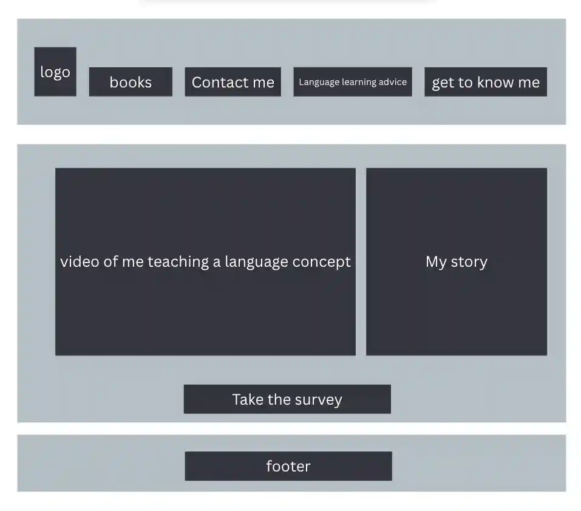

This will be a website that informs English students of the resources I plan to create and eventually sell. A series of books that teach small talk and relationship English: vocabulary and grammar and practices included with video instruction. For now, these will just be images of the book covers and brief descriptions of what they entail. In the future, I may create a purchase option. A way to contact me with questions. A survey to better gauge what students want. A language learning advice section that links to some language learning advice videos. At present, this section will have two videos: Why learn vocabulary rather than grammar and Big and Little mistakes: why most grammar mistakes don’t matter. Links to my socials.
How can I learn relationship and common English?
How can I buy your books?
headers: Gill Sans
text body: Gill Sans MT
links and buttons: sans-serif
Language learning begins with seeds. A single spark of interest, planted gently, can grow into something deeply transformative. In the garden of the mind, curiosity is the soil, and each new word is a shoot reaching upward. With the steady support of well-crafted textbooks and guided video instruction, those shoots are nurtured with structure and clarity. As understanding takes root, comprehension deepens, and what once felt foreign becomes familiar. Over time, these small sprouts intertwine, creating a rich network of connection—between ideas, people, and cultures. We don’t just learn to speak; we learn to communicate, to belong, to build community. With patience and care—and the right tools—what started as a simple interest blossoms into fluency, a living garden where meaning grows freely and beautifully. If you’re ready to nurture those first seeds, my textbooks and video lessons are the fertilizer—designed to transform curiosity into growth, and growth into fruit you can truly share. Please take the survey below so I can keep producing content that speaks directly to you.
